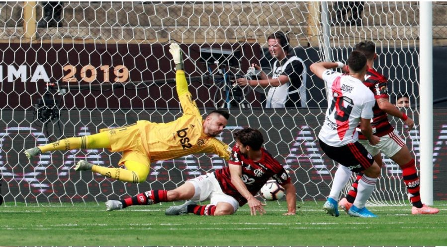

Flamengo Campeão da Libertadores 2019
O jogo começou equilibrado e com o Flamengo tomando mais a iniciativa e dominando as ações. Porém aos 14 minutos, Filipe Luís não cortou bem e Nacho Fernández conseguiu cruzar. Willian Arão e Gerson falharam e Borré chegou batendo para abrir o placar.
O até então organizado Flamengo sentiu o golpe e o River soube aproveitar. Subiu a marcação e praticamente anulou o rubro-negro carioca. No entanto, a outra única jogada de perigo do primeiro tempo aconteceu apenas aos 36 minutos. Palacios recebeu fora da área e arriscou. A bola passou perto da meta de Diego Alves.
O Flamengo voltou com postura diferente para o segundo tempo, tentando finalizar mais. Logo aos dois minutos, Gabigol arriscou de fora da área, mas o chute saiu sem força. Aos cinco, o River retribuiu com Matías Suárez e a bola passou ao lado.
Aos 11 da segunda etapa, chance inacreditável desperdiçada pelo rubro-negro. Bruno Henrique fez boa jogada pela esquerda, rolou pra dentro da área, Gabigol chutou e a zaga rebateu. Na volta, Everton Ribeiro finalizou e Armani defendeu.
A primeira mudança no Fla aconteceu aos 20 minutos do segundo tempo. Gerson sentiu problema muscular e deu lugar a Diego Ribas. A mexida surtiu efeito, mas os comandados de Jorge Jesus só conseguiram voltar a criar uma chance de perigo aos 30 minutos. Arrascaeta tentou uma bicicleta, mas não saiu precisa.
Porém, como diz o rubro-negro, “pro Flamengo tudo é sofrido”. E foi. E teve gol do Gabigol. Dois. O primeiro, aos 44 do segundo tempo. Bruno Henrique fez excelente jogada pela esquerda, achou Arrascaeta, que rolou para o meio da área para o camisa 9 empatar.
Depois, aos 46. O artilheiro do time na temporada ganhou da dupla de zaga argentina, invadiu a área e virou para dar o título ao Flamengo depois de 38 anos.
| JOGO | River Plate 1 x 2 Flamengo |
|---|---|
| DATA DO JOGO | 23 de novembro de 2019 |
| LOCAL | Monumental de Lima - Peru |
| HORÁRIO | 16h (de Brasília) |